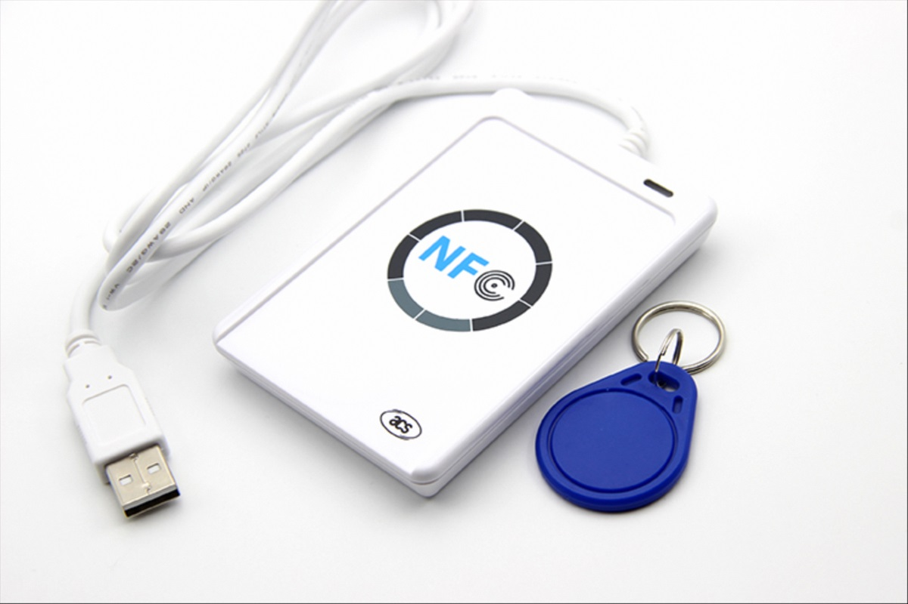
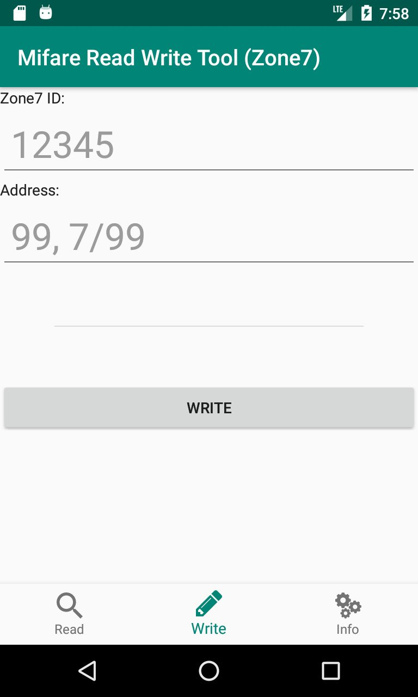

The original intention of this project is to try to crack the
access card used in my residential area, because the vendor
challenged us that it is INVINCIBLE, nobody can clone it, but I
have the mindset that in our IT world, nothing is impossible,
maybe require more time to crack with worst brute-force method.
First I found the card type is Mifare 1K by using smartphone's
NFC feature. Then I searched for card read write device, found
ACR122U-A9 with ~USD16, quite cheap and decided to give it a try.

After trying various of Windows and Linux cracking tools
(including default tools from device seller), no clue. Finally, I
managed to crack it with Kali Linux 2018.2 and https://github.com/vaneay/crypto1_bs
in less than 5 minutes. The INVINCIBLE design did not implement
full encryption to the card, Key B in all 16 sectors is default
value with FFFFFF. So, the cracking
process is easy by using Key B to find Key A. Found data on Sector
0 Block 0 and Sector 1 Block 0 only after cracking. The ID of
access card is written on Sector 1 Block 0 Byte 1 & Byte 2
without any encryption, and the system does not validate any data
on Sector 0 Block 0 for UID BCC SAK ATQA, the system read Sector 1
with Key A only to compare if the ID is valid in the database.
Full encryption with all different Key A and Key B creates a
tight security to Mifare 1K card. So, I decided to add a value to
Key B to replace default FFFFFF. I
just put similar Key B for all 16 sectors in the app (by right it
should be all different values, but I think this should be enough,
you can modify the coding to all different Key B values if you
insist to).
I also added Address of owner to Sector 1 Block 1 for
more information to the card, so that management will know easily
of lost card owner by just scanning the card with the app.
I decided to inform my residential area's RC (Resident Committee)
about the cracking information with the purpose to enhance it
before anyone can crack it easily and clone it infinitely.
Actually there are some people selling card cloning service,
sooner or later they will be able to crack it with tools provided
from Internet.
To ease the creation of card in new full encryption data, I coded
this mobile app to use in Android smartphone with NFC feature.
Since there is no validation to data on Sector 0 Block 0
especially on UID of card, so it is much easier for the app, can
be written to almost any writable card without any issue.
App is developed by using Android Studio. There are only 2 main
pages + 1 info page in the app. The core Mifare Classic library
forked from https://github.com/ikarus23/MifareClassicTool
but has been simplified for the usage of this app only, forked
codes in Common.java and MCReader.java. Variables of Key A and Key
B located at Common.java named KEYA_ZONE7 and KEYB_ZONE7
respectively (I will not disclose the Key A and Key B of my
residential access card, I just simply replaced with some values
in coding).
READ page: Read the Mifare card, displays UID + ID of the card
that used to validate with system + Address.
WRITE page: Write to blank or overwrite to a writable card, with
info of ID and Address (No UID changes because the system does not
validate UID, any UID will do).

INFO page: Version info, description and credits of the app. BTW,
Zone7 is my residential name.
This project has been completed early 2019, but not uploaded to
Github yet because of lazy to write this documentation. Finally I
have completed this before moving towards a new project. Next
project will be openCV related to read car plate and face
recognition and movement detection, mainly to enhance my
residential security. It is big but I hope to completed it before
end of 2020 (I work on these kind of projects as hobby on my free
time, it depends on how free am I or no other interesting projects
to put on priority).
This application is developed by Season Wong with credits to https://github.com/ikarus23/MifareClassicTool.
It is free software and licensed under the GNU General
Public License v3.0 (GPLv3).